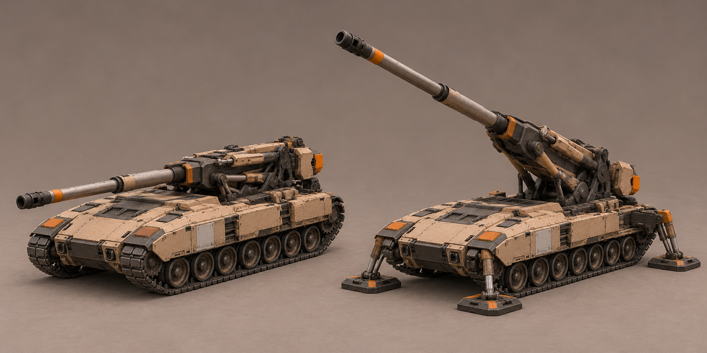

Обязательно наведение на 360° в развёрнутом состоянии. Автор не выбрал эту гаубицу и отметил, что текущая компоновка не выглядит убедительно для полного вращения. Требуется новый поиск с проверкой всего круга.
Гаубица · предварительный силуэт, не утверждён

Открытая артиллерийская люлька отличает её от закрытой танковой башни уже в походном состоянии. В развёрнутом — поднятое орудие и опоры. Это предложение для сравнения, не выбранная внешность или общий проверенный риг двух состояний.
Число/устройство опор, пропорции, точки шарниров и кинематика ещё не утверждены. Изображения требуют сведения на единой геометрии. Конкретный дизайн гаубицы выбирается отдельно; новые механики этот лист не вводит.